2주차 피날레 🖼️
포스터 갤러리 완성 — 발표는 월요일!
TGIF · Gallery Complete 🎉
Happy Friday! The week-long project is done: our classroom wall is now a full research poster gallery — birds and budgies, Canada Geese, cats, mice, bubble tea, even Japanese fashion history. All that's left is the big moment: interactive presentations on Monday! 🎤

✍️ Final Touches Deadline Day Focus
Friday morning was crunch time — adding facts, gluing pictures, and lettering titles. The Canada Goose team and the “Different Kinds of Mice” researcher were deep in the zone.
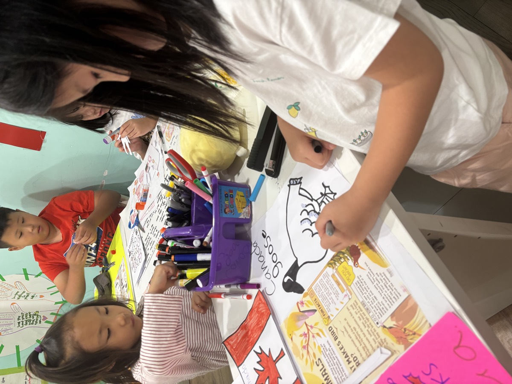
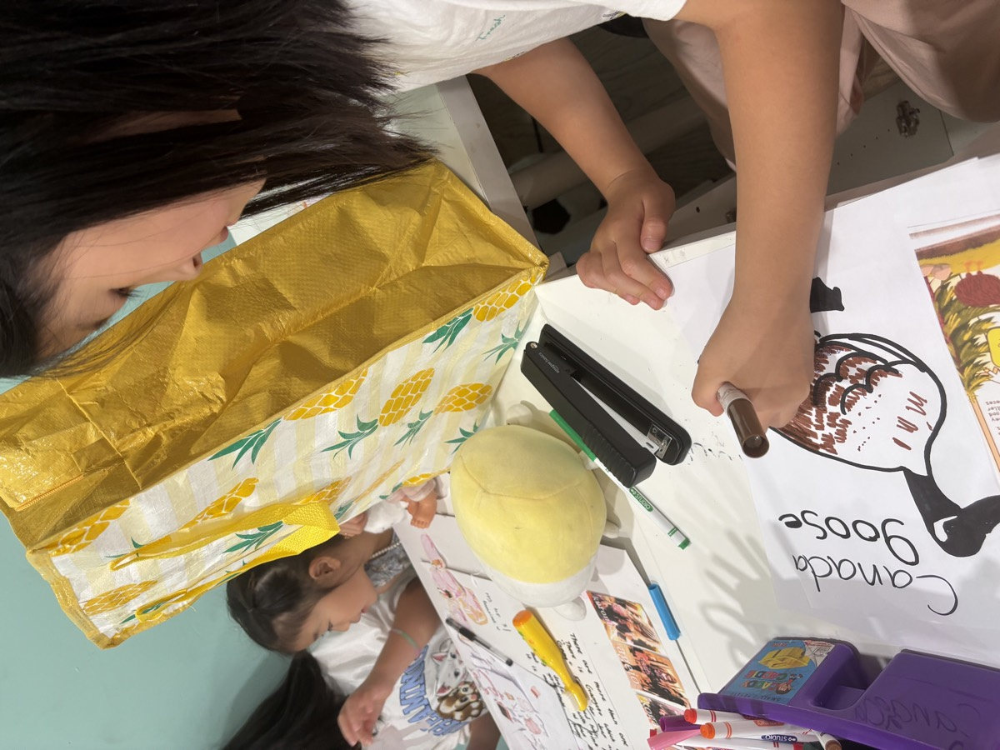
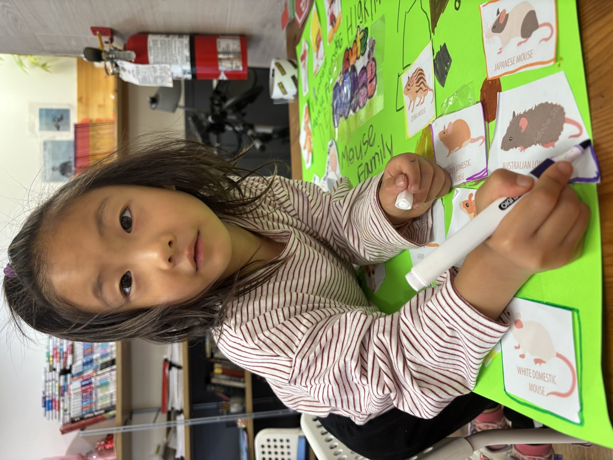
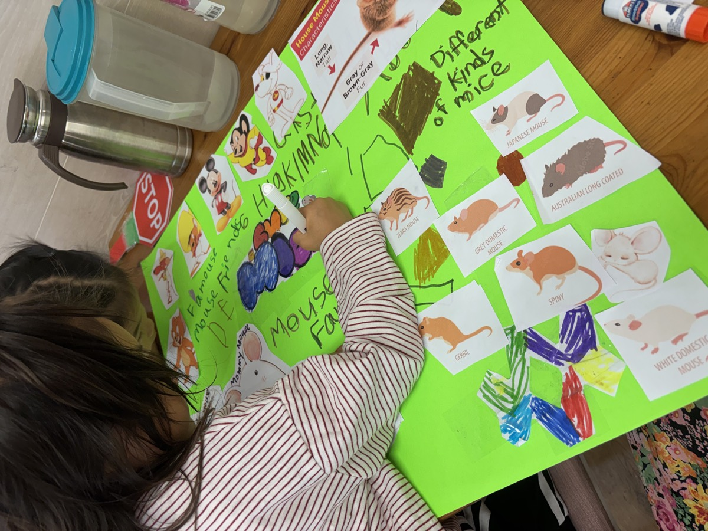
🖼️ Fresh off the Wall Highlights from the Gallery
Two showstoppers: the completed “Mouse Family” board, and an impressively detailed deep-dive into “All the Types of Gyaru” — a Japanese fashion subculture study, complete with photo references and history. Wow. 👏
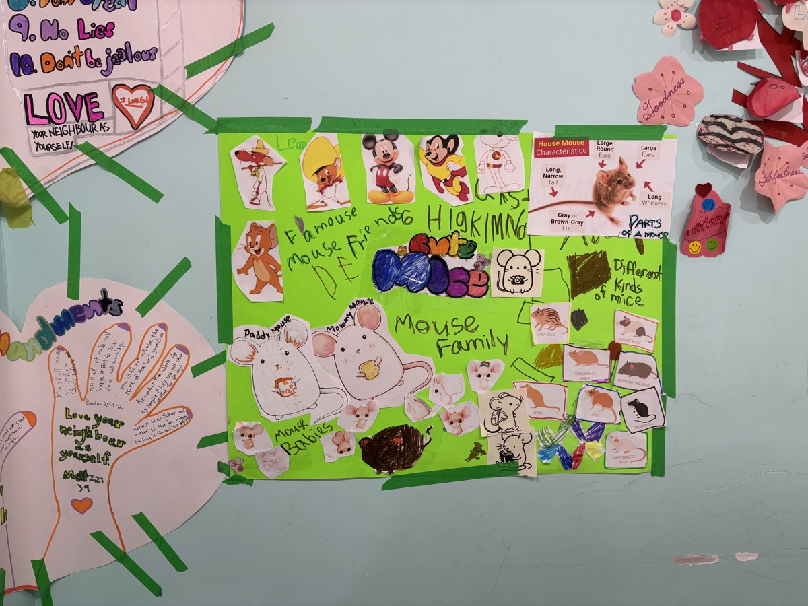
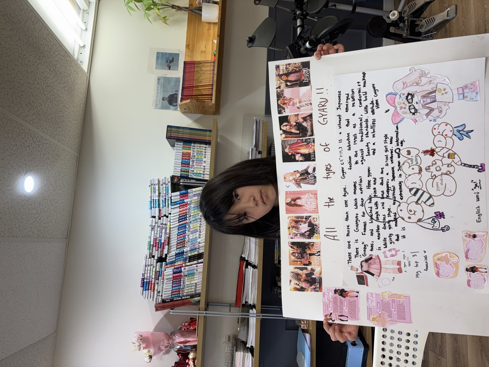
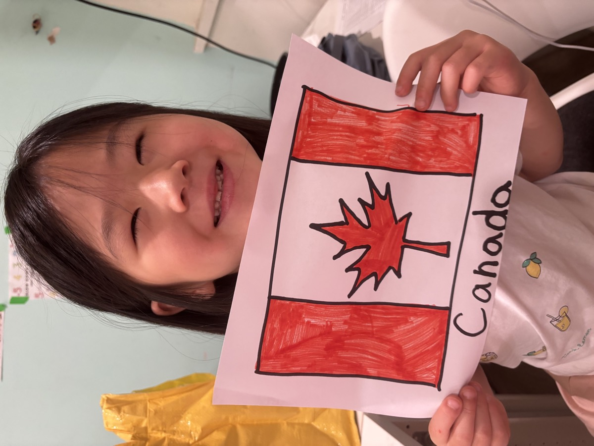
🍕 Pizza Friday A Job Well Done
Deadline met = pizza earned. Slices all around to celebrate a hard-working week. 🍕
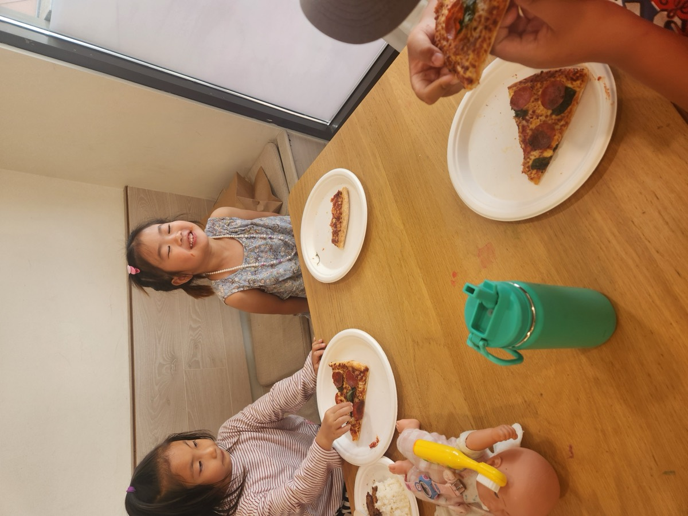
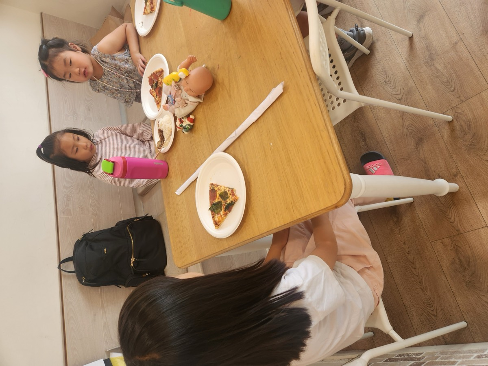
🎹 Winding Down Music & Friends
The afternoon eased into the weekend — a little piano practice, toys on the table, and hangout time with Ms. Diane. 💕
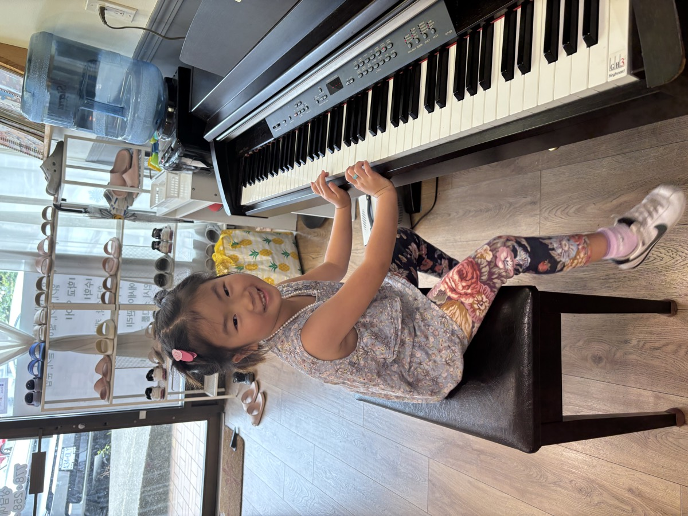
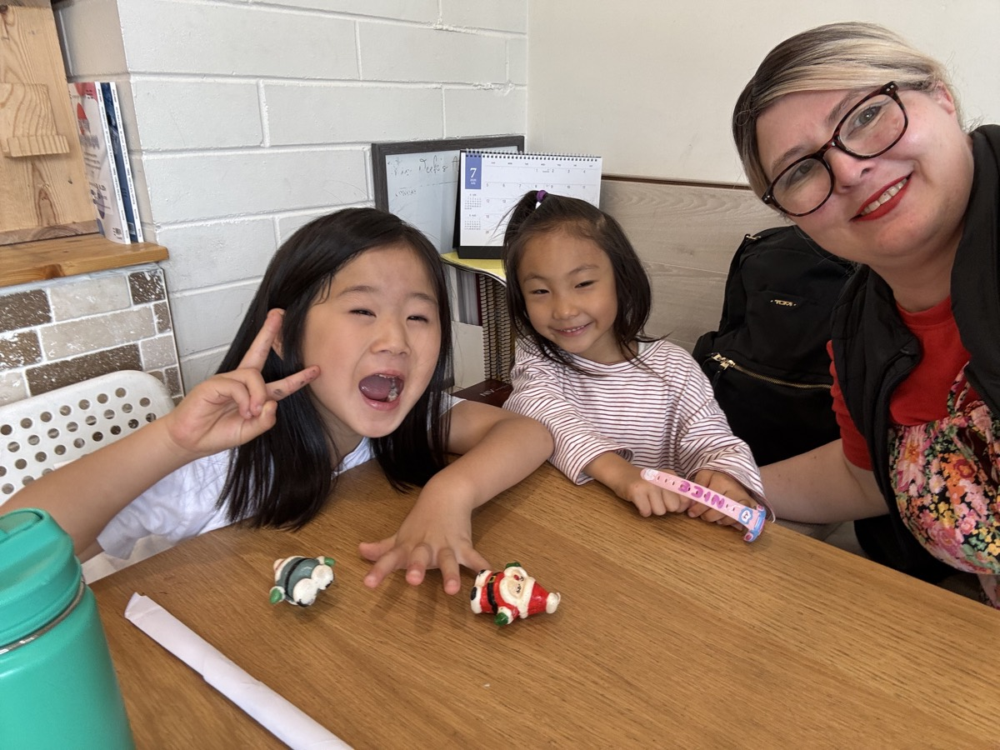
“The students have worked very hard to prepare for their interactive presentations that they will deliver on Monday. We wish everyone a very happy, relaxing, and blessed weekend!” ❤️🙏💕
Coming Monday (7/13): the moment we've all been working toward — the kids deliver their interactive research presentations! Stay tuned for the big debut. 🌟
Two weeks down, and what a journey — from first drafts to a full gallery wall. Have a wonderful, restful weekend, and see you Monday for presentation day! ☀️
- Phone
- 778-258-2223
- @jc_afterschool
- Location
- #130 – 1140 Austin Ave, Coquitlam, BC